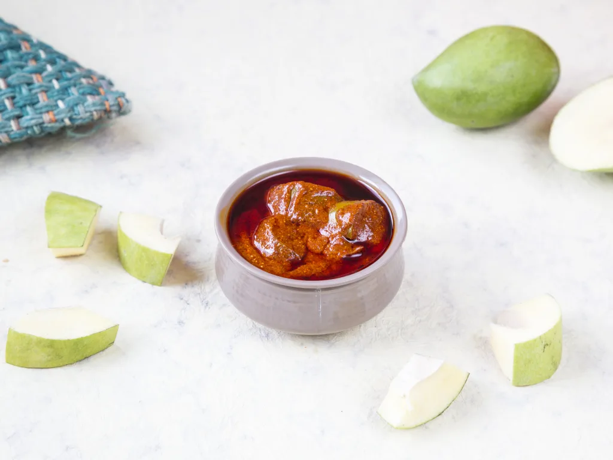
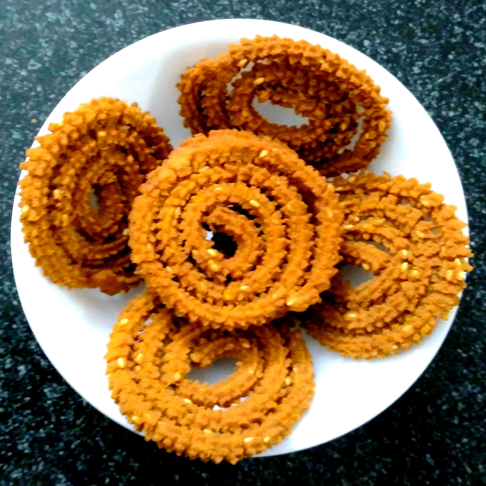
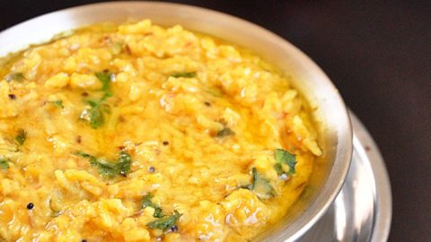
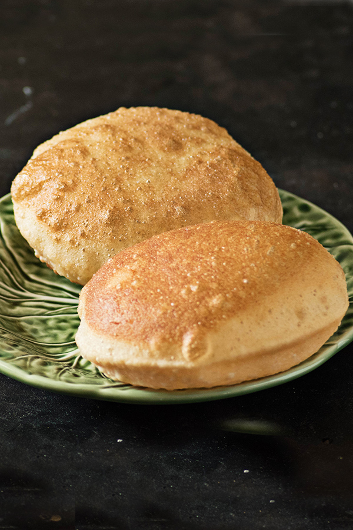

Mango Pickle
Rs 200
Mango Pickle is a Traditional Indian condiment made with raw
mangoes,spices and oil. In India, pickles are relished as a side in
every meal.It is eaten with dal-rice, dal-roti, parathas and even
with many breakfast dishes. Indian cuisine is diverse so a maongo
pickle is made in different ways.

Murukulu
Rs 200
Murukku is an appetizer and crunchy snack. It was either originated
in South India or in some other parts of India and Sri Lanka. The
name of this dish has come from the Tamil word ‘twisted’ and it
refers to the shape (coiled or spiral) of this dish.

Kichidi
Rs 200
Khichdi is a dish in South Asian cuisine made of rice and lentils
(dal), but other variations include bajra and mung dal khichri. In
Indian culture, in several regions, especially in the northern
areas, it is considered one of the first solid foods that babies
eat.

Lemon Rice
Rs 200
Lemon rice is one of the most common dishes from South India, where
it also goes by the name chitranna. There are a few variations to
making this dish and this is just one of them. This rice is usually
eaten alone or with raita, yogurt, chutney, or kosambari (a type of
salad).

Aloo Paratha
Rs 200
Aloo paratha is a whole wheat flatbread which is stuffed with spicy
mashed potatoes. It is pan fried with oil or ghee and is usually
enjoyed with butter, yogurt or pickle. My aloo paratha is nothing
fancy, it’s a basic simple recipe which is made in so many homes
across India.

Poori
Rs 200
Puri or Poori is a deep-fried puffed up Indian bread made with whole
wheat flour (atta), salt, water, and oil. They are the most popular
Indian side-dish to accompany curries. The culinary tour of India is
never considered complete without enjoying Puri dipped in hot and
bold curries.
